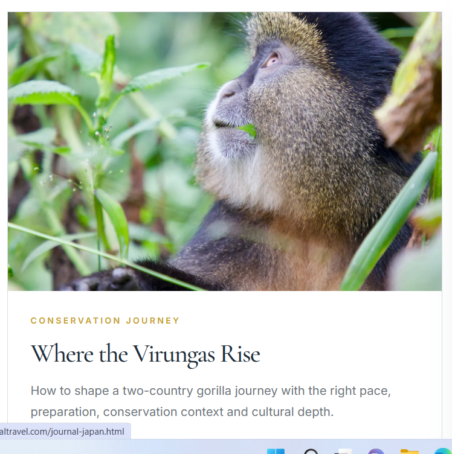

Kenya Coast
When the coast slows time
Watamu, the Indian Ocean and the quiet logic of travelling by dhow.
ReadThe Resplendent Journal
Thoughtful perspectives on journeys and experiences worth knowing — a small editorial collection, not content for content’s sake.
Kenya Coast
Watamu, the Indian Ocean and the quiet logic of travelling by dhow.
Read
Morocco
Marrakech, the High Atlas and the desert become stronger when each is allowed to feel like a new chapter.
Read
Conservation Journey
How to shape a two-country gorilla journey with the right pace, preparation, conservation context and cultural depth.
Read
Japan
Tokyo's precision, Kyoto's quieter rituals and a third chapter with enough room to notice the details.
Read
Namibia
Desert, coast, Damaraland and Etosha, connected with enough time for distance to become part of the journey.
Read
City & Desert
A polished stopover, family holiday or executive base becomes stronger when the city's scale is edited with intention.
Read
Kenya
What the landscape reveals when the day begins in the air.
Read